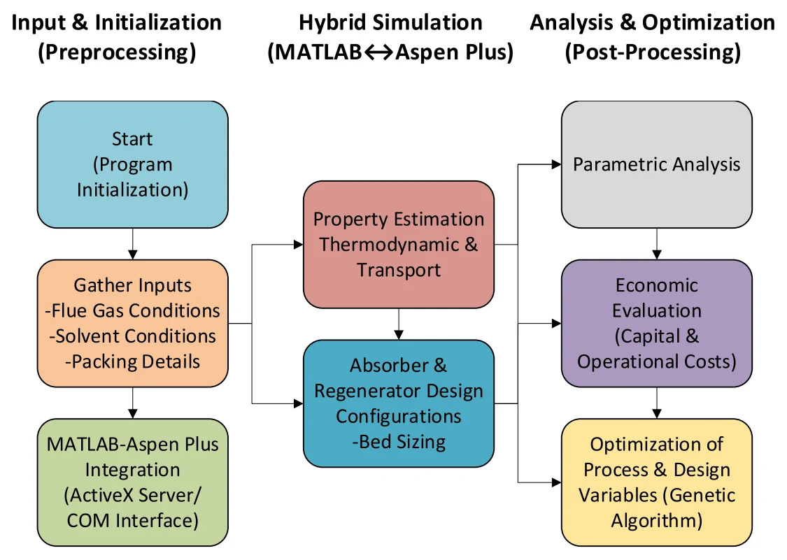
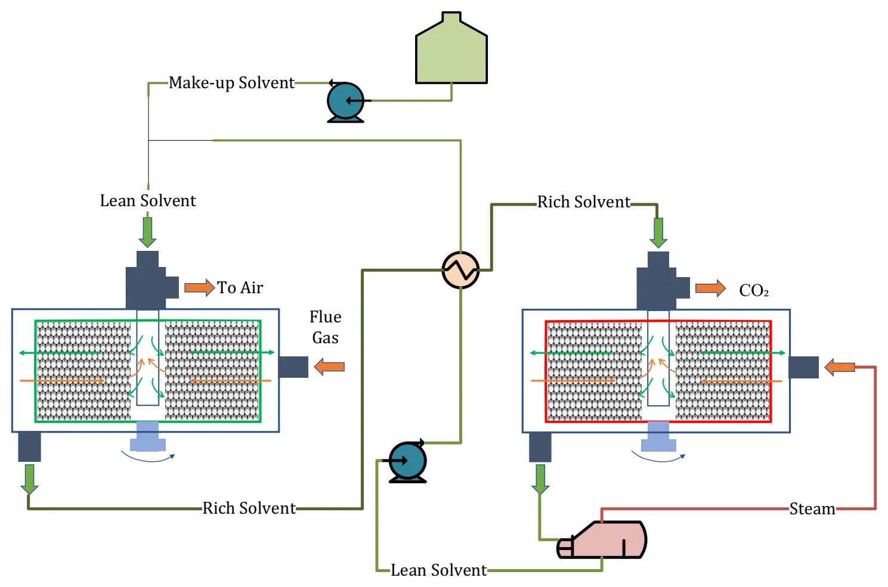
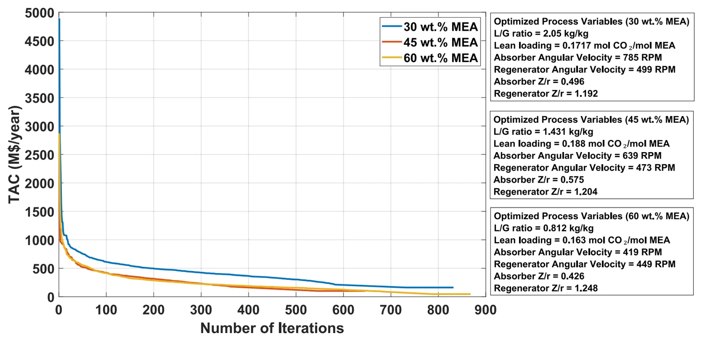
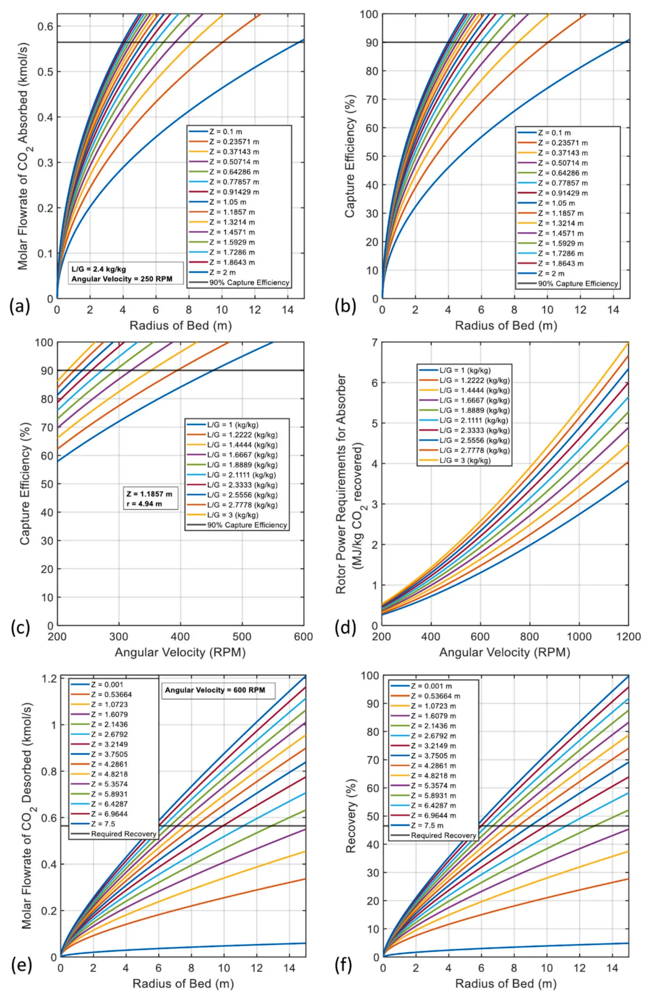

Separation and Purification Technology · 2026
A much smaller carbon capture plant
A full-scale capture loop built on rotating packed beds, with a bed model written from scratch where Aspen has none.
The problem
Amine scrubbing works, but the columns are huge. Packing volume drives the capital cost, and the heat needed to regenerate the solvent drives the running cost.
Rotating packed beds spin the packing to create high gravity. That speeds up mass transfer and should shrink the equipment a lot. Earlier studies mostly tested the idea on lab rigs or on a single unit. Few had modelled a whole absorber and regenerator loop and put a price on it.
What I built
I built a full-scale post-combustion capture model in Aspen Plus, with the absorber and regenerator closed into one continuous loop. Aspen Plus has no rotating packed bed block, so I wrote the bed model from scratch in MATLAB, with custom mass transfer correlations, and linked the two through COM.
Aspen supplies the thermodynamic and transport properties. The MATLAB side sizes the beds and runs the analysis that follows: a parametric study, the economics, and a genetic algorithm that searches the liquid-to-gas ratio, lean loading, rotor speed and height-to-radius ratio.


Results
Before any optimisation I ran a parametric study at MEA concentrations of 30, 45 and 60 wt% and lean loadings of 0.16, 0.24 and 0.30. Against a conventional packed bed, the absorber came out up to 90% shorter and the regenerator up to 80% shorter.
In the best optimised design, absorber packing volume fell from 2,909 to 134 m³ and regenerator packing from 1,975 to 519 m³. Total annualised cost fell from $175.8M a year for the packed bed to $60.99M, and CO₂ capture cost from $224.6 to $77.88 per tonne. Against the best design from the parametric study, the optimisation alone cut total annualised cost by 27%, from $84M to $60.99M.
CO₂ capture cost
Dollars per tonne of CO₂ captured, on a 2023 cost basis.
Total annualised cost
Million dollars a year.


What limits it
This is a simulation study. There is no pilot data for the complete absorber and regenerator loop, so I validated the two halves separately, each against one published study.
The 60 wt% MEA case that came out cheapest is also the most demanding to operate. Viscosity, corrosion and the temperature rise from the heat of absorption all grow with concentration, and the paper points to corrosion inhibitors and intercooling to manage them.
Yasir, M., Haider, J., Saeed, S., Amanipour, M., Roskilly, T. (2026). Integrated rotating packed bed reactor design for post combustion carbon capture: Parametric analysis, optimization and economic viability. Separation and Purification Technology, 386, 136584.